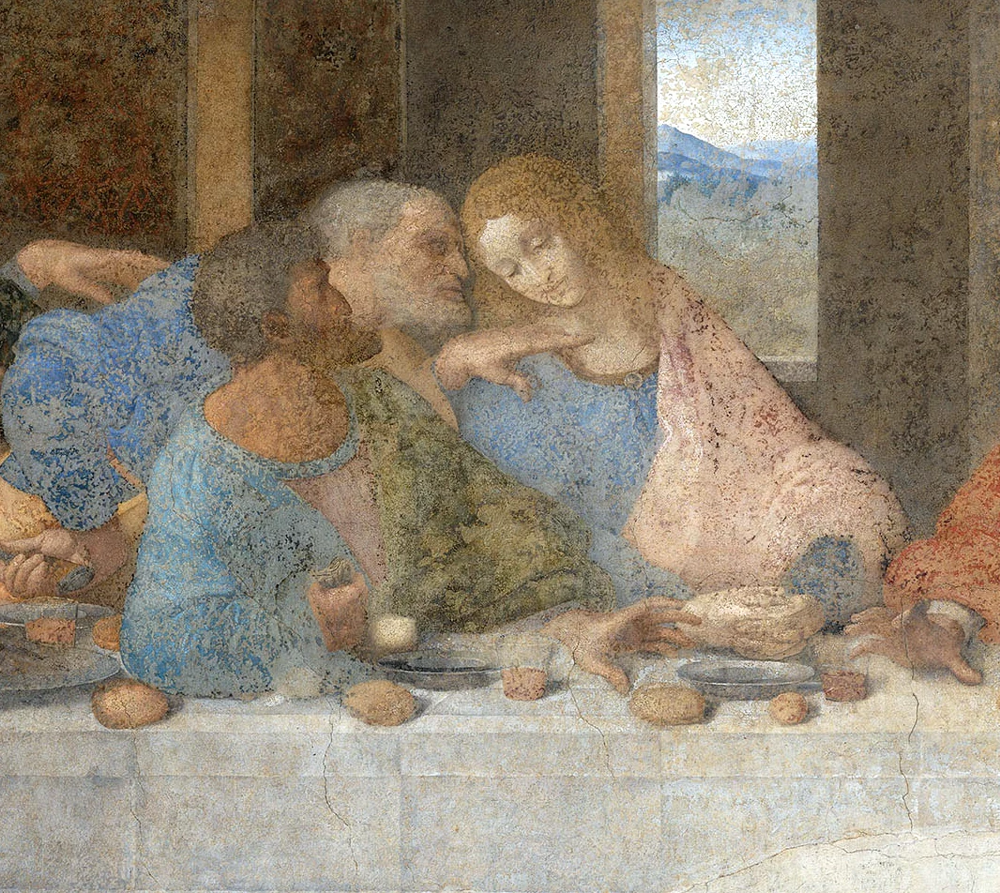

 아직 펼치지 않은 카드
아직 펼치지 않은 카드
1495년 무렵, 밀라노의 한 수도원 식당 벽에 레오나르도 다빈치가 긴 식탁을 그리기 시작했어요. 그림은 예수가 ‘너희 가운데 하나가 나를 팔 것이다’, 곧 제자 하나가 돈을 받고 자기를 넘겨줄 것이라고 말한 바로 다음 순간이에요. 레오나르도가 수첩에 적어 둔 몸짓을 따라, 열세 사람의 얼굴과 손을 하나씩 찾아 보세요.
옛날 이탈리아의 한 화가가 수도원 식당 벽에 아주 긴 식탁을 그렸어. 예수님이 한마디 하시자 모두 깜짝 놀랐대. 누가 어떻게 놀랐는지 같이 찾아볼까?
검수 전 시안이에요(기준서 1판). 장면에는 레오나르도의 메모, 같은 때를 산 사람의 글, 박물관과 소장처의 기록에 있는 것만 옮겼고, 풀이가 갈리는 곳은 그렇다고 밝혔어요. 상상은 ‘눈 감고 상상해 보기’에만 썼어요.
밀라노의 산타 마리아 델레 그라치에(Santa Maria delle Grazie)는 도미니코회라는 수도회의 수도원이에요. 그 식당은 수사(수도원에서 함께 살며 기도하는 사람)들이 모여 밥을 먹고, 식사하는 동안 기도하고 묵상하던 방이에요.
식당 북쪽 벽 전체에 레오나르도의 「최후의 만찬」이 있어요. 맞은편 남쪽 벽에는 1495년에 몬토르파노가 그린 「십자가에 못 박히심」이 있어요. 두 그림은 지금도 서로 마주 보고 있어요.

그림을 주문한 사람은 밀라노 공작 루도비코 스포르차예요. 「최후의 만찬」 위쪽에 그려 넣은 공작 집안의 무늬(문장)가 그것을 알려 줘요. 공작은 이 식당에서 일주일에 두 번 식사했다고 전해져요.
수사님들이 밥 먹던 방이야. 한쪽 벽엔 긴 식탁, 맞은편 벽엔 십자가 그림이 있어.
물어보기밥 먹는 방 벽에 그림을 그린다면, 너는 무엇을 그리고 싶어?
레오나르도는 그리기 전에 수첩에 사람들의 몸짓을 하나씩 적어 두었어요. 1494~1495년 무렵에 쓴 메모예요. 우리말로 옮기면 이래요.

“마시던 사람은 잔을 그대로 두고 말하는 이 쪽으로 고개를 돌린다. 한 사람은 두 손을 펴 손바닥을 보이며 어깨를 귀까지 으쓱하고, 놀라 입을 벌린다. 한 사람은 옆 사람 귀에 대고 말하고, 듣는 이는 그쪽으로 몸을 돌려 귀를 기울인다.”
레오나르도의 수첩(1494~1495년 무렵) · 수첩을 영어로 옮겨 펴낸 리히터의 번역을 이 안내서가 우리말로 옮김
같은 때를 산 작가 반델로(Bandello)는 레오나르도가 일하는 모습을 적어 남겼어요. 레오나르도는 이른 아침 비계(높은 곳에서 일하려고 세운 발판)에 올라 해 질 녘까지 붓을 놓지 않았고, 먹고 마시는 것도 잊었대요.
어떤 날은 붓을 들지 않은 채 한두 시간 그림 앞에 서서 바라보기만 했어요. 다른 일을 하다가 갑자기 와서 한두 번 붓질만 하고 가 버린 날도 있었대요. 위의 붉은 분필 그림은 그가 유다의 얼굴을 미리 그려 본 종이예요.
화가는 그리기 전에 사람들이 놀라는 모습을 공책에 적어 두었대.
물어보기깜짝 놀라면 너는 어떤 몸짓을 해? 한번 해 볼까?
가운데 예수가 ‘너희 가운데 하나가 나를 팔 것이다’라고 말했어요(마태복음 26장 21절). 그 말이 양옆으로 번져, 열두 사람이 세 사람씩 네 무리로 술렁여요.
왼쪽 끝부터 오른쪽 끝까지, 일곱 곳을 하나씩 눌러 보세요. 레오나르도의 메모와 복음서(예수의 이야기를 적은 성경의 네 책)의 한 줄이 그림 속에서 만나요.
그림 속 숫자를 왼쪽부터 하나씩 눌러 보세요. ‘가까이 보기’를 누르면 그 자리를 크게 볼 수 있어요.
레오나르도 다빈치, 「최후의 만찬」, 1495~1498년 무렵 · 밀라노 산타 마리아 델레 그라치에 수도원 식당 · 레오나르도 다빈치 그림 · 퍼블릭 도메인 · 위키미디어 공용
그림 위의 숫자나 아래 번호를 눌러 보세요.
왼쪽 끝에서 오른쪽 끝까지, 한마디가 번져 간 열세 사람을 다 만났어요.
‘너희 가운데 하나가 나를 팔 것이다.’ 이 말을 들었다면, 나는 어떻게 물었을까요?
예수님 말씀에 모두 깜짝 놀랐어. 숫자를 눌러서 한 사람씩 보자!
물어보기누가 제일 많이 놀란 것 같아?
벽의 물감은 일찍부터 상했어요. 그래서 레오나르도의 제자들이 같은 크기로 따라 그린 그림이 귀하게 남았어요.
런던 왕립 미술원(Royal Academy)에 있는 이 그림은 1515~1520년 무렵 레오나르도의 제자 지암피에트리노가 그렸다고 봐요. 원본을 가장 가깝게 옮긴 그림으로 꼽혀서, 21년에 걸친 복원(1978~1999년) 때 큰 길잡이가 되었어요.


두 그림을 바꿔 가며 보세요. 1652년 벽에 문을 내면서 원본에서는 식탁 아래 예수의 두 발이 사라졌어요. 따라 그린 그림에는 그 두 발이 남아 있어요.
제자가 똑같이 따라 그린 그림이야. 여기엔 예수님 발도 있어!
물어보기두 그림에서 다른 곳을 하나 찾아볼까?
눈 감고 상상해 보기
이른 아침, 수도원 식당은 아직 조용해요. 높은 창으로 빛이 비스듬히 들어와요. 높은 발판 위의 화가는 붓을 든 채 한참 동안 벽을 바라보기만 해요. 벽 아래에는 수사들이 앉을 긴 의자가 줄지어 있어요. 화가는 마침내 한 사람의 손끝에 붓을 한 번 대고, 다시 물러서서 바라봐요.
눈을 감아 봐. 아주아주 긴 식탁이야. 빵 냄새가 나는 것 같아. 누군가 “나는 아니지요?” 하고 작게 물어.
다시 원본을 보면, 두 발은 사라졌어도 그 한마디는 지금도 열두 사람 사이로 번져 가요.
가까운 사람에게 실망했던 순간, 나는 어떤 얼굴이었나요?
누가 내 마음을 아프게 하면 나는 어떻게 해?
마음에 닿는 한 줄을 고르거나 직접 써 보세요. 한 줄을 남기면 이 자리의 도장이 찍혀요. 이 기기에만 저장돼요.
이야기를 보다 궁금해질 만한 것들이에요. 답을 읽거나 짧은 영화로 보세요.

아직 펼치지 않은 이야기예요. 누르면 이야기가 펼쳐지고 색이 돌아와요. 더 알고 싶으면 근거를 따라가 보세요.
다 펼치면, 다음에 오실 때 새 이야기가 찾아와요.
오늘의 뒷이야기는 여기까지예요. 다음에 오시면 새 이야기가 기다리고 있어요.
펼친 뒷이야기 · 누르면 다시 볼 수 있어요
메모와 그림 몸짓 메모를 펴낸 리히터는 메모와 완성된 그림이 꼭 같지는 않다고 적었어요. 귓속말하고 칼을 든 사람은 그림의 베드로·요한·유다 무리에 보이지만, 메모에서 잔을 엎는 손은 그림에서는 유다가 소금 그릇을 엎는 손이 되었어요.
스케치 속 자리 영국 왕실이 가진 레오나르도의 스케치 종이를 보면, 왼쪽 위 식탁 장면에서 유다가 식탁 이쪽에 따로 앉아 있고, 요한은 식탁에 엎드려 잠들어 있어요. 왕실 소장품 해설은 이 종이를, 그림 전체의 자리 잡기를 연구한 것으로는 지금 알려진 단 한 장이라고 해요. 완성된 그림에서는 유다가 다른 제자들 사이에 앉았어요.
그리기 시작한 해 1494년이라고도, 1495년이라고도 해요. 그 무렵 수도원의 기록이 남아 있지 않아서 정확히 알 수 없어요.
도마의 손가락 부활 이야기와 잇는 풀이는 그림을 보고 하는 풀이예요. 레오나르도가 그 뜻을 적어 둔 기록은 이번 조사에서 찾지 못했어요.
그리스도인들은 이 장면을 성목요일 밤의 마지막 식사로 기억해요. 말씀은 뜻만 옮기고, 본문은 대한성서공회 개역개정으로 이어 드려요.
마태복음 26장 20~25절 저녁 식탁에서 예수가 제자 하나가 자기를 팔 것이라고 말해요. 제자들은 몹시 근심하며 한 사람씩 자기는 아니냐고 물어요.
요한복음 13장 21~30절 베드로가 예수 곁의 제자에게 고갯짓으로, 누구 이야기인지 여쭈어 보라고 해요. 유다는 빵 조각을 받고 곧 밖으로 나가요. 그때는 밤이었다고 적혀 있어요.
누가복음 22장 21~23절 제자들이 자기들 가운데 어느 사람이 그런 일을 할지 서로 물어요.
확인한 날 · 2026년 11월 18일 · 바뀌기 쉬운 정보라 정기적으로 다시 확인해요
밀라노 산타 마리아 델레 그라치에 광장의 최후의 만찬 박물관에 있어요. 화요일부터 일요일까지 오전 8시 15분~오후 7시에 열고(마지막 입장 6시 45분), 월요일과 1월 1일, 12월 25일은 쉬어요.
모든 표는 미리 예약해야 해요. 한 번에 40명까지 15분 동안 봐요. 표값은 25세 이상 15유로, 18~25세 2유로, 18세 미만은 무료예요. 표는 석 달치씩 열려요. 2027년 2~4월분은 12월에 열리고, 매주 수요일 낮 12시에 다음 주 표가 조금 더 풀려요.
그림 속 일곱 곳을 모두 찾아 읽으면 카드에 금박이 입혀져요.
둘 가운데 하나만 해도 카드가 채색돼요.
‘처음 만나는 기독교 문화’의 깊은 카드예요. 카드 단계와 남긴 글은 이 기기에만 저장돼요.
영화처럼 보기 · 약 3분
화면을 누르거나 → 키를 누르면 넘어가요. 그냥 두어도 자막이 저절로 넘어가요.